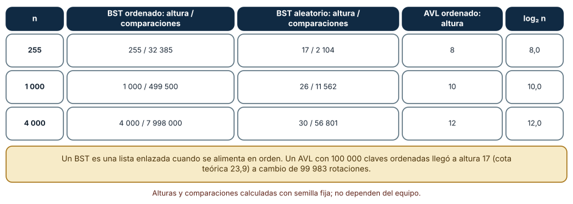
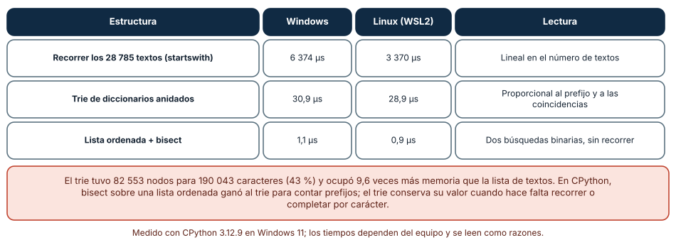
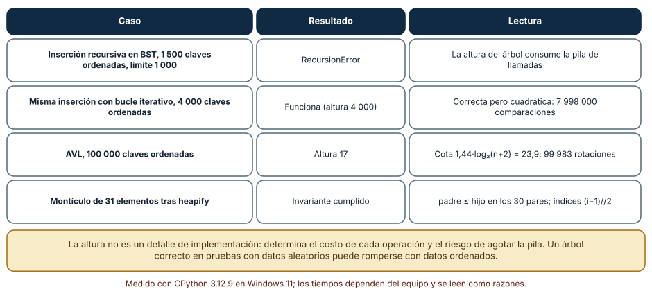

← SE-087 — Tablas hash, mapas y conjuntos · ↑ Parte 07 · 📚 Índice completo · 🌐 Portal · SE-089 — Grafos y recorridos →
Punto profesional y fundamento pedagógico
Punto profesional. La clase existe para modelar jerarquías y prefijos con árboles o tries justificando recorrido y balance.
Por qué aparece aquí. Se sitúa después de Tablas hash, mapas y conjuntos y antes de Grafos y recorridos: convierte el conocimiento anterior en una decisión observable que la clase siguiente podrá reutilizar. La continuidad se comprueba en el artefacto, no por compartir vocabulario.
Error conceptual que debe corregir. Elegir árbol porque el dominio ‘parece jerárquico’.
Secuencia de aprendizaje. Antes de leer la solución, el estudiante predice el resultado del caso normal y del error conceptual anterior. Luego explica un caso resuelto paso a paso, construye un contraejemplo que cambie la decisión y, sin consultar el texto, reconstruye el mecanismo y lo aplica a una entrada nueva. La secuencia usa predicción, explicación propia, contraste y recuperación. ICAP distingue participación de construcción de conocimiento; How People Learn II exige conectar conocimiento previo, contexto y transferencia; la práctica de recuperación respalda producir de nuevo la explicación tras una demora; y Education for Life and Work exige devolución que explique la causa del error.
Evidencia de aprendizaje. Tree-invariants.md con inserción, recorrido, altura y árbol degenerado. Debe contener predicción previa, observación, explicación causal, contraejemplo, criterio de aceptación y una nota de qué dato haría cambiar la conclusión.
Límite de la conclusión. Un árbol lógico no implica representación enlazada.
Trazabilidad fuente → afirmación
| Fuente primaria u oficial | Afirmación que respalda | Lo que no prueba |
|---|---|---|
| MIT 6.006 Introduction to Algorithms | Estructuras, algoritmos, corrección y análisis de complejidad; autoridad: MIT OpenCourseWare | No demuestra por sí sola que el artefacto del estudiante sea correcto. |
| Mathematics for Computer Science | Inducción, grafos, conteo y razonamiento discreto; autoridad: MIT OpenCourseWare | No demuestra por sí sola que el artefacto del estudiante sea correcto. |
| SWEBOK Guide v4.0a | Construcción, medición y fundamentos de ingeniería; autoridad: IEEE Computer Society | No demuestra por sí sola que el artefacto del estudiante sea correcto. |
Antes de empezar
Esta clase continúa la biblioteca de estructuras y algoritmos de la Parte 07. Recupera la evidencia de la clase anterior, añade una decisión propia de Árboles, tries y estructuras jerárquicas y deja un artefacto que la clase siguiente deberá consumir. La pregunta activa es: ¿Qué invariante convierte una jerarquía en una estructura buscable?
Prerrequisitos
- Haber completado la clase anterior o reconstruir su contrato y evidencia.
- Python 3.11 o posterior, terminal, editor y Git; un segundo runtime es opcional y debe declararse.
- Trabajar con fixtures sintéticos: ninguna observación necesita datos de una persona o sistema real.
Problema auténtico
La biblioteca de estructuras y algoritmos organiza casos por equipo, servicio y componente, y además necesita completar prefijos de etiquetas. Un diccionario plano duplica rutas y no puede listar un subárbol sin escanear todo.
Objetivos observables
Al terminar podrás explicar los cinco mecanismos de esta clase, predecir su comportamiento antes de ejecutar, construir un caso normal y uno límite, diagnosticar el fallo controlado, comparar una alternativa y entregar evidencia que otra persona pueda reproducir.
Mapa conceptual
Ver la notación fuente del diagrama
flowchart LR
N1[Árbol, raíz / subárbol] --> N2[Árbol de búsqueda] --> N3[Balance / rotaciones] --> N4[Trie / prefijos] --> N5[Recorridos / serialización]
N5 -->|fallo o cambio| N1El mapa se lee como una cadena de razonamiento, no como fases obligatorias del runtime. La flecha de retorno indica que un fallo o cambio de requisito obliga a revisar el modelo inicial; no autoriza a parchear solo la última salida.
Temas y por qué importan
| Tema | Por qué cambia una decisión profesional | Evidencia mínima |
|---|---|---|
| Árbol, raíz y subárbol | Un árbol conecta nodos sin ciclos mediante relación padre-hijo y ofrece un camino único desde la raíz. | Predicción, traza causal y contraejemplo de Árbol, raíz y subárbol en tree-invariants.md |
| Árbol de búsqueda | En un BST, claves menores y mayores se separan por subárbol. | Predicción, traza causal y contraejemplo de Árbol de búsqueda en tree-invariants.md |
| Balance y rotaciones | Árboles AVL o rojo-negro acotan altura mediante metadatos y rotaciones que preservan orden. | Predicción, traza causal y contraejemplo de Balance y rotaciones en tree-invariants.md |
| Trie y prefijos | Un trie comparte prefijos a lo largo de aristas o nodos. | Predicción, traza causal y contraejemplo de Trie y prefijos en tree-invariants.md |
| Recorridos y serialización | Preorden sirve para copiar estructura, inorden produce claves ordenadas en un BST y postorden procesa hijos antes que padre. | Predicción, traza causal y contraejemplo de Recorridos y serialización en tree-invariants.md |
Conceptos y decisiones
1. Árbol, raíz y subárbol
Un árbol conecta nodos sin ciclos mediante relación padre-hijo y ofrece un camino único desde la raíz. Profundidad, altura y grado describen forma. Una jerarquía organizacional puede no ser árbol si un nodo tiene varios padres; forzarla pierde relaciones.
2. Árbol de búsqueda
En un BST, claves menores y mayores se separan por subárbol. La búsqueda sigue una rama, pero cuesta proporcional a altura. Sin balance, inserciones ordenadas degeneran a lista y convierten el caso esperado logarítmico en lineal.
3. Balance y rotaciones
Árboles AVL o rojo-negro acotan altura mediante metadatos y rotaciones que preservan orden. La garantía cuesta trabajo en escritura y complejidad de implementación. La clase razona el mecanismo; no reimplementa un árbol productivo sin necesidad.
4. Trie y prefijos
Un trie comparte prefijos a lo largo de aristas o nodos. Buscar depende de longitud de la clave más que del número total, pero el alfabeto y nodos dispersos pueden consumir memoria. Comprimir caminos cambia representación, no el conjunto de claves.
5. Recorridos y serialización
Preorden sirve para copiar estructura, inorden produce claves ordenadas en un BST y postorden procesa hijos antes que padre. Recursión puede exceder pila en árboles profundos; una pila explícita hace visible el recurso.
La altura manda: un árbol de búsqueda según el orden de inserción
Un árbol binario de búsqueda (BST) promete O(log n) si está equilibrado. Medimos la altura y las comparaciones acumuladas con tres cargas. Insertando 255, 1 000 y 4 000 claves en orden, la altura fue 255, 1 000 y 4 000 y las comparaciones sumaron 32 385, 499 500 y 7 998 000: una lista enlazada disfrazada. Con las mismas claves barajadas, la altura fue 17, 26 y 30 y las comparaciones 2 104, 11 562 y 56 801. Un árbol AVL insertando las claves en orden quedó en altura 8, 10 y 12, y con 100 000 claves llegó a 17 (la cota 1,44·log₂(n+2) vale 23,9) al coste de 99 983 rotaciones.
La lección es que el algoritmo correcto con datos aleatorios puede ser terrible con la entrada más natural: datos ya ordenados. Por eso se prueban las tres entradas (ordenada, inversa, aleatoria) y se mide la altura, no solo el resultado funcional.

Cómo leer la figura. Compara las dos columnas centrales: la misma estructura con las mismas claves, distinto orden de llegada. Dónde deja de valer: el AVL se implementó para el experimento con rotaciones simples y dobles; un árbol rojinegro, un B-tree o una lista ordenada con bisect tienen otros costos. La cota 1,44 log₂ vale para AVL, no para cualquier árbol equilibrado.
Prefijos: trie, bisect y recorrido completo
Generamos 28 785 palabras sintéticas de 4 a 9 letras (190 043 caracteres) y contamos las que empiezan por abc (39). Tres soluciones dieron el mismo resultado: recorrer todas con startswith (6 374 µs en Windows, 3 370 µs en Linux), un trie de diccionarios anidados (30,9 µs y 28,9 µs) y una lista ordenada con dos búsquedas binarias (1,1 µs y 0,9 µs). El trie tuvo 82 553 nodos (43 % de los caracteres) pero ocupó 15,3 MB, 9,6 veces los 1,6 MB de la lista de textos.
El resultado incómodo es que, en CPython, bisect sobre una lista ordenada ganó al trie para contar. Esto no refuta el trie: el trie permite completar carácter a carácter, compartir prefijos y consultar «¿existe algún texto con este prefijo?» sin rangos. Lo que refuta es la idea de que la estructura más específica gana siempre. El criterio es la operación: para contar y paginar por prefijo sobre datos estáticos, una lista ordenada es más simple y más rápida; para autocompletar con inserciones frecuentes, el trie o una variante comprimida tiene sentido.

Cómo leer la figura. Fíjate en la última nota: el trie ocupó mucha más memoria que la lista de palabras. Dónde deja de valer: las palabras son sintéticas con un alfabeto de diez letras; un diccionario real tiene otra distribución de prefijos. Los diccionarios anidados de Python pagan mucha memoria por nodo; un trie en C o con arreglos compactos la reduciría.
Recursión sobre árboles y el invariante del montículo
Una inserción recursiva en un BST con 1 500 claves ordenadas falló con RecursionError (límite 1 000), porque la profundidad de la recursión es la altura del árbol. La versión iterativa funcionó con 4 000 claves ordenadas, pero con 7 998 000 comparaciones. Una estructura jerárquica sin balanceo convierte la altura en un riesgo de pila y de tiempo a la vez.
El montículo binario muestra otra forma de jerarquía: un arreglo plano donde el padre del índice i es (i − 1) // 2 y el invariante es *padre ≤ hijo*. Tras heapify de 31 valores aleatorios, el invariante se cumplió en los 30 pares padre-hijo. Un árbol puede vivir en un arreglo sin punteros; lo que lo hace árbol es el invariante, no la representación. Verificar el invariante tras cada operación es la prueba que más errores atrapa.

Cómo leer la figura. Cada fila es un experimento aislado con su lectura a la derecha. Dónde deja de valer: el límite de recursión es una política de CPython; otros lenguajes tienen otros límites. El invariante se comprobó para 31 elementos, que es una evidencia, no una demostración de corrección de heapq.
Definiciones de trabajo
- árbol, raíz y subárbol: un árbol conecta nodos sin ciclos mediante relación padre-hijo y ofrece un camino único desde la raíz.
- árbol de búsqueda: en un bst, claves menores y mayores se separan por subárbol.
- balance y rotaciones: árboles avl o rojo-negro acotan altura mediante metadatos y rotaciones que preservan orden.
- trie y prefijos: un trie comparte prefijos a lo largo de aristas o nodos.
- recorridos y serialización: preorden sirve para copiar estructura, inorden produce claves ordenadas en un bst y postorden procesa hijos antes que padre.
Las definiciones son operativas para la biblioteca de estructuras y algoritmos. No convierten términos con historia más amplia en sinónimos y deben contrastarse con la documentación primaria enlazada al final.
Ejemplo mínimo
tree = {"platform": {"api": {"auth": {}, "billing": {}}}}
node = tree
for segment in "platform/api/auth".split("/"):
node = node[segment]
assert node == {}Antes de ejecutar, predice estado, resultado y error. Después registra versión, comando y salida. Si el fragmento es pseudocódigo o pertenece a otro lenguaje, etiquétalo como tal y no afirmes que fue ejecutado.
Ejemplo profesional
En la biblioteca de estructuras y algoritmos, un caso conserva identidad, prioridad, dependencias, instante de llegada y estado de resolución. La implementación de esta clase debe conservar ese contrato aunque cambie la forma interna. El caso profesional no pregunta únicamente si produce una salida: pregunta quién puede producirla, qué estado observa, cómo falla y qué rastro permite disputar una decisión incorrecta.
Compara el caso normal con autorización falsa, evidencia incompleta, empate y repetición. Un mecanismo es apropiado cuando esas diferencias quedan visibles y localizadas; es peligroso cuando dependen de orden accidental, estado oculto o una convención que el consumidor no puede conocer.
Práctica guiada
- Copia el contrato de entrada y salida antes de escribir implementación.
- Predice el caso normal y un límite; identifica la invariante que no puede romperse.
- Implementa la versión mínima sin I/O dentro del núcleo.
- Ejecuta el caso y conserva comando, versión y salida bajo
evidence/. - Introduce el fallo controlado, reduce la reproducción y formula dos hipótesis rivales.
- Corrige la causa, añade regresión y ejecuta el conjunto completo.
- Compara con otro paradigma o lenguaje indicando qué semántica se preserva.
Ejercicios
- Altura: inserta 1 000 claves en orden y barajadas en un BST propio; registra altura y comparaciones, y calcula la razón con
log₂ n. - Prefijos: genera 10 000 palabras y compara recorrido, trie y
bisectpara tres prefijos; mide también la memoria contracemalloc. - Invariante: escribe una función que verifique padre ≤ hijo en un arreglo de montículo y úsala tras cada operación en una prueba aleatoria.
- Pila: reescribe la inserción recursiva con un bucle y comprueba que soporta 4 000 claves ordenadas; mide el costo en comparaciones.
Reto verificable
Entrega implementación, fixtures, pruebas y un informe corto. Se aprueba si otra persona ejecuta desde checkout limpio, obtiene los mismos resultados y puede relacionar cada rama o transformación con una regla del dominio. No se aprueba por cantidad de archivos ni por usar la sintaxis característica del paradigma.
Caso conductor
La biblioteca de estructuras y algoritmos recibe casos del motor de reglas comparado, mantiene una frontera de trabajo priorizada y explica por qué el siguiente caso es elegible. Ejecuta una carga pequeña trazable, duplicados, prioridades iguales y una dependencia ausente. Cambia después una sola regla o condición y revisa qué archivos, pruebas y trazas debieron modificarse. Esa superficie de cambio alimenta el proyecto final de la parte.
Preguntas frecuentes
¿Cuándo un árbol es mejor que un dict?
Cuando necesitas orden, rangos o vecinos (siguiente, anterior). Un dict no ofrece esas operaciones. Si solo consultas por clave exacta, el dict es más simple y más rápido.
¿Por qué mi BST es lento con datos ya ordenados?
Porque cada inserción cae a la derecha y la altura es n (4 000 claves ordenadas hicieron 7 998 000 comparaciones). Usa un árbol equilibrado, una lista ordenada con bisect o baraja la entrada si el contrato lo permite.
¿Un trie ahorra memoria?
No necesariamente: aquí 82 553 nodos de diccionario ocuparon 15,3 MB frente a 1,6 MB de la lista de textos. Comparte prefijos pero paga por nodo.
¿Cuándo la recursión sobre un árbol es un problema?
Cuando la altura puede superar el límite de recursión (1 000 por defecto). Con un árbol desequilibrado, usa una pila explícita o equilibra.
Fallo controlado y diagnóstico
Inserta claves ordenadas en un BST sin balance y mide altura igual a n. Contrasta con entrada permutada y explica por qué el promedio no es garantía.
Registra síntoma, entrada mínima, hipótesis, observación que descarta cada hipótesis, causa, corrección y prueba de regresión. No cambies simultáneamente implementación, fixture y expectativa.
Inserta 1 500 claves ordenadas con una función recursiva y el límite de recursión por defecto. Síntoma: RecursionError. Hipótesis rivales: (a) la función tiene un error lógico; (b) la altura del árbol supera el límite. Prueba: inserta las mismas claves barajadas (altura ≈ 26) y observa que funciona; inserta ordenadas con un bucle y comprueba la altura 1 500. Conclusión: el código es correcto, el árbol está desequilibrado. Añade una prueba con entrada ordenada y registra la altura máxima aceptada.
Errores comunes y cómo corregirlos
| Síntoma | Causa probable | Corrección |
|---|---|---|
Inserción lenta y RecursionError con datos ordenados | BST sin balanceo con entrada ordenada | Equilibrar, barajar o usar una lista ordenada; probar las tres entradas |
| El trie consume más memoria que la lista de datos | Un diccionario por carácter paga cabecera por nodo | Medir con tracemalloc y valorar bisect o un trie comprimido |
| El montículo devuelve valores en un orden raro al recorrerlo | Se recorre el arreglo creyendo que está ordenado | Extraer con heappop o ordenar al final; el arreglo solo garantiza el mínimo |
| Búsqueda por prefijo incluye resultados que no corresponden | Límite superior mal calculado en la búsqueda binaria | Usar prefijo + '\uffff' o la siguiente cadena y probar prefijos vacíos y ausentes |
| El árbol correcto en pruebas falla en producción | Las pruebas usaron datos aleatorios | Añadir entradas ordenada, inversa y con duplicados |
Entorno y archivos clave
work/SE-088/
├── README.md
├── algorithm_library/
│ ├── domain.py
│ └── se_088.py
├── fixtures/cases.json
├── tests/test_se_088.py
└── evidence/diagnosis.mdEl README declara plataforma, runtimes, comandos, limpieza y límites. Evita dependencias externas cuando la biblioteca estándar permita observar el mecanismo; si agregas una, fija procedencia y versión.
Seguridad, ética y accesibilidad
- la autorización forma parte del dominio y no se infiere por ausencia de rechazo;
- no uses
eval, reglas descargadas ni serialización insegura; - limita colas, recursión, tamaño de entrada y tiempo de evaluación;
- redacta trazas y conserva una explicación textual además de color o animación;
- una recomendación automatizada debe poder revisarse, impugnarse y corregirse;
- respeta licencias de ejemplos y atribuye adaptaciones.
Puente hacia el trabajo con agentes
Cuando un agente implementa un árbol o un índice jerárquico, pide la altura máxima que garantiza y la prueba con entrada ordenada. Un agente que solo prueba con datos aleatorios entrega una estructura que pasa todos los controles y se degrada con el primer lote ordenado. El harness puede incluir un generador de entradas adversarias (ordenada, inversa, repetida) y fallar si la altura o el tiempo exceden el presupuesto.
Transferencia
Traslada un fixture al segundo modelo o lenguaje. Compara representación de ausencia, error, mutabilidad, orden y cancelación. La transferencia está lograda cuando el contrato se conserva y las diferencias están explicadas, no cuando la sintaxis se parece.
Evaluación y evidencia
| Criterio | Evidencia para aprobar |
|---|---|
| comprensión | explicación causal de los cinco mecanismos |
| corrección | normal, límite, inválido y contraejemplo |
| diseño | estado, efectos y contrato localizables |
| diagnóstico | reproducción mínima y regresión |
| transferencia | comparación semántica, no estética |
| reproducibilidad | versiones, comandos, salida y límites |
Fuentes
- MIT 6.006 Introduction to Algorithms — Estructuras, algoritmos, corrección y análisis de complejidad; autoridad: MIT OpenCourseWare.
- Python Data Model — Semántica de secuencias, conjuntos, mappings, igualdad y hash; autoridad: Python Software Foundation.
- Python Standard Library — Deque, heapq, bisect, graphlib y contenedores disponibles; autoridad: Python Software Foundation.
- Python Debugging and Profiling — Timeit, cprofile y tracemalloc con sus límites; autoridad: Python Software Foundation.
- Mathematics for Computer Science — Inducción, grafos, conteo y razonamiento discreto; autoridad: MIT OpenCourseWare.
- SWEBOK Guide v4.0a — Construcción, medición y fundamentos de ingeniería; autoridad: IEEE Computer Society.
Cada fuente respalda el mecanismo indicado; ninguna demuestra que la implementación de la biblioteca de estructuras y algoritmos sea correcta. Esa afirmación depende de fixtures, pruebas, trazas y revisión reproducible.
- Python:
bisect— búsqueda y ordenamiento incremental sobre listas ordenadas. - Python:
heapq— montículo binario sobre listas y su invariante. - Python:
tracemalloc— medición de memoria asignada por el código Python, con su sobrecosto. - MIT 6.006: Binary Search Trees and AVL — árboles de búsqueda, AVL y análisis de altura.
Límites y siguiente paso
Un árbol representa jerarquía, no dependencias arbitrarias o múltiples rutas. La siguiente clase generaliza a grafos y recorridos.
Glosario
- árbol, raíz y subárbol: un árbol conecta nodos sin ciclos mediante relación padre-hijo y ofrece un camino único desde la raíz.
- árbol de búsqueda: en un bst, claves menores y mayores se separan por subárbol.
- balance y rotaciones: árboles avl o rojo-negro acotan altura mediante metadatos y rotaciones que preservan orden.
- trie y prefijos: un trie comparte prefijos a lo largo de aristas o nodos.
- recorridos y serialización: preorden sirve para copiar estructura, inorden produce claves ordenadas en un bst y postorden procesa hijos antes que padre.
← SE-087 — Tablas hash, mapas y conjuntos · ↑ Parte 07 · 📚 Índice completo · 🌐 Portal · SE-089 — Grafos y recorridos →